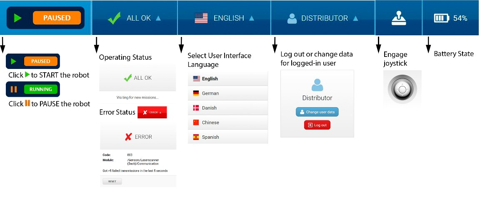

MiR web interface
This is an overview of the MiR web interface. Here you will find
- how to connect to the interface
- the interface functions that are used the most. This is not a complete how-to on the use of the web interface capabilities. For detailed information about the interface see the MiR robot Reference Guide pdf. (TODO)
Connect to the web interface
You can connect to the web interface over its hotspot or the outside network it is connected to.
Hotspot
- connect to the MiR_R*** hotspot with the password
- open mir.com (default IP = 192.168.12.20) in your browser
- use your credentials to log in to the web interface
Outside network
- you have to know the
MiR100_IP. If you don't, connect to the web interface over hotspot and go toSystem -> Settings -> WiFi.MiR100_IPis listed under the connection details - open
MiR100_IPin your browser - use your credentials to log in to the web interface
Warning
MiR100 internal clock is prone to desynchronization which can mess with the robot control.
First thing you have to do after you connect to the MiR web interface is go to System -> Settings -> Date & Time and synchronize the internal clock. Click "load from device" and "Save changes".
Interface overview
Top bar
The top bar shows information on the current state of the robot. You can start/pause the robot, check robot status, select you language, select your user, check the robot battery percentage or manually control the robot with the on screen joystick. Robot speed for manual control is fixed when using the joystick from the top bar. This is not the recommended use of joystick. See TODO

Navigation
To get to a specific subsection of the interface select an item in the primary menu and then in the relevant sub-menu.

Interface menus
Dashboards
Dashboards are the main way you interact with the robot over the web interface. You can create your own dashboard that displays only relevant information for your use case. Select Dashboards to open the list of dashboards, and select the Create dashboard button to open the dashboard designer. Alternatively, you can select an existing dashboard from the list. The dashboard below includes a Mission queue, mission action log, two mission buttons, a joystick and the map.

Setup
Missions
A mission is a predefined series of actions that the robot can be set to perform. A mission can be a simple transportation task between defined positions or a more complex job.
To create a new mission select Setup -> Missions -> Create mission to open the mission designer. There you can add different actions to the mission, such as move to position, wait, show light and others. You can also use logic like a for loop.

Missions are started by adding a mission to the mission queue and clicking on the continue button in the top bar or in the dashboard. The robot will perform the missions in the order they are added, and you can rearrange the queued missions if needed. You can enqueue a mission:
- from a dashboard: you can configure a mission button
- from the
Missionsmenu: in the mission list click on the green button next to the selected mission.
Maps
In Setup -> Maps you can choose the active map by clicking the check mark next to the map on the map list. You can also create or edit the maps the robot uses. All maps must belong to a site, which is the overall container for one or more maps used in the same facility. Maps must be contained in the same site for the robot to be able to move from one map to another.
To create a new map select Setup -> Maps -> Create map. You are then directed to the map editor where you can start the mapping process and find tools to edit the map and add various features such as positions, markers and zones. For the full mapping instructions see the MiR robot Reference Guide.

Other setup submenus
- Sounds: you can upload new sounds to the robot or edit the volume and length of the uploaded sounds. Sounds can be used in missions as alerts.
- Transitions: transitions are used to handle changeovers from one map to another within the same site.
- I/O modules: I/O modules (Bluetooth and WISE) are used for receiving and giving input and output to be able to communicate with external devices.
- Users: set up, edit, and delete system users.
- User groups: create user groups and assign permissions to each group.
- Paths: Paths are saved routes between two positions. The first time the robot runs the route between two positions, the calculated path is saved and used every time the robot runs the same route, thereby saving time for route calculation. A path is automatically recalculated only in the event that one of its positions is modified. You can delete a path, and the robot will then calculate a new path the next time it runs between those two positions.
- Path guides: A path guide makes it possible to define paths that the robot should follow between two positions by defining waypoint positions between the start and goal.
- Footprints: A footprint defines the size of the robot and its top module or load.
Monitoring
- Analytics: gives a graphic overview of the robot's driven distance over a specified period of time.
- System log: contains events that are logged by the operating system components. The system log contains information about system state at a given time (shown by color-codes), the affected module, a short explanation, and a time stamp.
- Error logs: a list of all detected system errors. Each entry is shown with a description, an indication of which module is affected, and the time when the error occurred.
- Hardware health: allows you to check the condition of the robot's hardware components, such as motor controllers, lasers scanners, and cameras.
- Safety system: provides a live view of the input from the laser scanners and the state of the emergency stop button.
- Mission log: contains the list of all missions that the robot has executed and the mission that is running now.
System
Settings
Settings contains the robot's parameter settings where the settings are divided into sub groups. Here are some of the most important settings:
Mapping
Mapping -> Mapping algorithm: the algorithm the robot uses for creating maps. Choose between Hector and Carthographer.
Planner
Planner -> Desired speed: the desired default speed in m/s. This value can also be changed through a mission action.Planner -> Maximum allowed speed: the robot's maximum speed in m/s which cannot be exceeded no matter what is stated in missions, zones, or other settings.Planner -> Cart reverse speed: the speed in m/s of the robot when it is reversing with a cart.Planner -> Maximum planning time: the maximum time in seconds allocated for planning a path.Planner -> Path timeout: the number of seconds where the robot cannot follow the path before it generates a new global plan.Planner -> Path deviation: the maximum distance in meters that the robot's local plan is allowed to deviate from the global plan.
UR interface
UR interface -> Universal Robot IP address: the IP address of the UR robot. Used with the industrial interface control
WiFi
WiFi -> Add connection: used to connect MiR100 to an outside network. Select the network you wish to connect and fill in the required information.MiR100_IPis displayed under the network connection details. When the user and MiR100 are connected to the same outside network, you can use this IP to access the web interface.
Date & Time
Date&Time -> Load from device -> Save changes: synchronize the internal clock. Since the internal clock is prone to desynchronization this needs to be done on every boot.
Other system submenus
- Processes: displays the software modules that control the system processes on the robot.
- PLC registers: registers can be accessed through a serial interface using the robot’s USB port (via RS232 adapter) or through a REST interface using the robot’s Ethernet connection.
- Software versions: you can update the robot to run the newest software and see a list of all previous versions installed on the robot
- Backups: copies of the configuration and system state data of your robot
- Robot setup: contains the robot configuration and calibration properties.
- Triggers: yhe robot can be set up to use Modbus TCP/IP communication. In the Triggers section you can set up links between robot missions and Modbus coil IDs
Help
- Robot information: contains robot information.
- API documentation: All functionality found in the robot interface can also be accessed through the robot's REST API. The REST API is what the robot interface uses to communicate with the robot. Here you can try the REST API. Enter your username and password and then select Launch API documentation. Each endpoint you can use is documented, and you can select Try it out to send an API request using the entered authorization. We also made a python REST API for the MiRco robot.
- Remote access: MiR Technical Support team remote access.
- Service book: notes about the robot.
- Manual: copy of the reference guide.